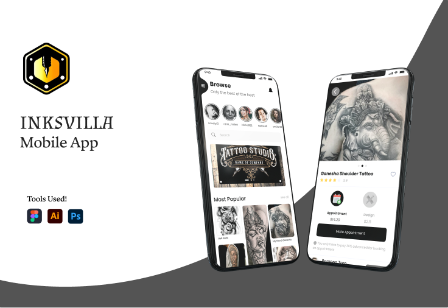
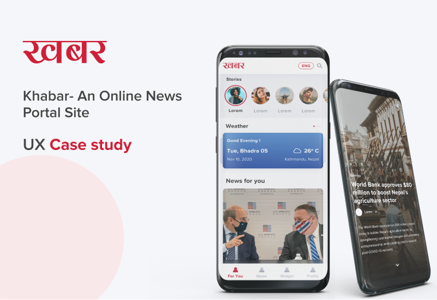
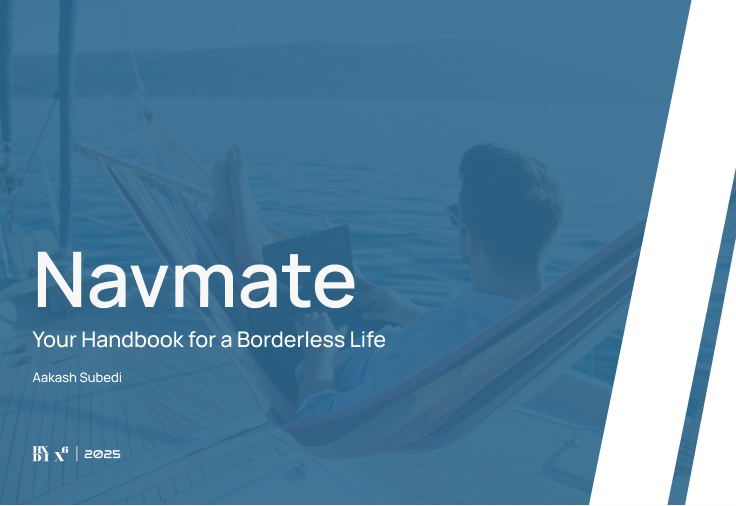
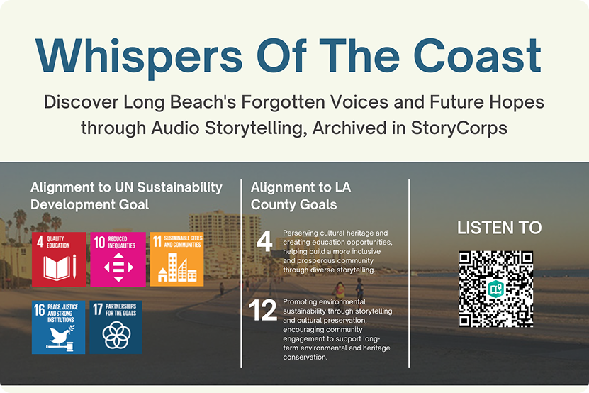

I design products that make complexity easier to use.
Product designer with 3+ years across marketplaces, service platforms, and complex internal tools. I work at the intersection of UX thinking, business logic, and technical collaboration — turning messy product requirements into experiences people can actually use.
Selected Work
Case studies in marketplace design, content platforms, logistics flows, and service experiences — where usability depends on clear structure and deliberate product decisions.

Inksvilla: Designing a Two-Sided Tattoo Marketplace
A mobile marketplace connecting tattoo artists and clients through discovery, trust, booking, and purchase — designed from ideation to launch at Bigfoot Infotech.

Khabar: Rethinking the Digital News Experience
A mobile news portal redesign focused on readability, content hierarchy, and reducing decision fatigue for everyday readers.

Navmate: A Strategic Flow for Borderless Living
A research-backed digital handbook helping people navigate housing, connectivity, and cross-border logistics — my MA thesis project at CSULB.

Whispers of the Coast
An interactive storytelling piece exploring community, memory, and place through audio, visual narrative, and immersive scroll design.
Expertise & Thinking
How I approach the work — from research and product logic to UI craft and AI-supported exploration.
Research + Insight
I uncover user needs through interviews and usability testing, then translate findings into clear product direction — not just recommendations.
Flows + Product Logic
I design the structure behind complex products — multi-step flows, permission systems, and service logic that users can actually move through.
UI Craft
High-fidelity execution with precise typography, strong visual hierarchy, and interaction details that hold up in engineering handoff.
AI-Supported Exploration
I use Stitch, Gemini, and ChatGPT to accelerate brainstorming and prototype directions faster — without replacing design judgment.
Professional Experience
Beehive Technologies
Audio Bee
Bigfoot Infotech
Let’s build something useful.
I’m looking for Product Design and UX roles where I can help shape product direction, simplify complex flows, and turn ambiguity into clear, usable decisions.